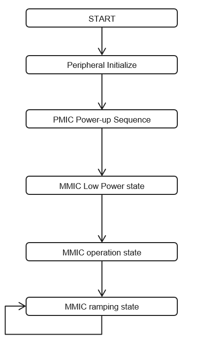

|
iRFE
Documentation for iRFE driver
|

|
|
iRFE
Documentation for iRFE driver
|
|
In this example, CTRX MMIC repeats ramp scenario forever after MMIC bring-up. TX performance of CTRX such as ramp linearity, phase noise can be measured by executing the example in the radar module. Calibration is executed once and no monitoring is executed.
| Flowchart | Sequence | Description of the Sequence | Functions/States | iRFE Function used in the sequence |
|---|---|---|---|---|
 | Peripheral Initialize | Initialize Platform SPI, I2C, Aurix Emem and configure SPI | PlatformI2c_initialize(), PlatformSpi_initialize(), AurixEmem_Constructor() , PlatformSpi_configure() | None |
| MMIC power-up sequence | MMIC power up sequence consists of multiple steps: 1. Power up sequence 2. Trigger LBIST 3. Load ram Firmware 3. Configure MMIC clock 4. Set MMIC Clock 5. Exit Pre-Operation | states: DAS_POWERUP and DAS_INITIALIZE | Convenience functions: IfxRfe_ctrxInit(), IfxRfe_loadRamFw() Wrapper functions: IfxRfe_triggerLbist(), IfxRfe_configureMmicClock(), IfxRfe_initialize_exp(), IfxRfe_setMmicClock_exp(), IfxRfe_getVersion(), IfxRfe_exitPreOperation_exp(). Low Level Commands: IfxRfe_triggerReset(). Additional Functions: IfxRfe_readOkPin() | |
| MMIC Low-power | After exiting the Pre-operation state, the MMIC reaches Low power state. The following operations are performed in this state: 1. Download a Sequencer Program 2. configure ramp scenario 3. Configure DMUX and Digital IO 4. configure transmitter 5. Configure receiver 6. configure start frequency 7. Go to operation | IrfeDemoApp_run() in state: DAS_INITIALIZE | Wrapper Functions: IfxRfe_getStatus(), IfxRfe_configureRampScenario_exp(), IfxRfe_configureDios(), IfxRfe_configureTxPower(), IfxRfe_configureRx(), IfxRfe_configureRfFrequency_exp(), IfxRfe_gotoOperation(). Convenience functions: IfxRfe_loadSequencerData(), IfxRfe_safeConfigureDmux() | |
| MMIC operation | In this state commands to configure the radar operation are executed. 1. Device Calibration 2. Start Ramp sequence and move to sequencing state | IrfeDemoApp_run() in states: DAS_CALIBRATE and DAS_SEQUENCE_START | Wrapper function: IrfeDemoApp_executeCalibration_AsyncStart(), IfxRfe_startRampScenario(), IrfeDemoAppSpecific_executeCalibration_SyncStruct(), IrfeDemoApp_executeCalibration_AsyncFinish() | |
| MMIC ramping | The transition to sequencing state occurs when Start_Ramp_Scenario() is called in the operation state. The transition out of this state to operation state occurs when Finish_Ramp_Scenario() is called. | IrfeDemoApp_run() in states: DAS_SEQUENCE_START and DAS_SEQUENCE_FINISH | Wrapper function: IfxRfe_finishRampScenario_exp() |